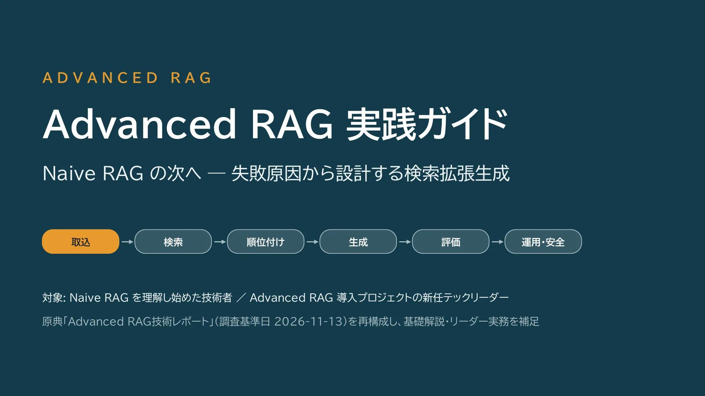
スライド 1 のテキストと解説
本資料は「Advanced RAG技術レポート」（調査基準日2026年11月13日）をもとに、Naive RAGを学び始めた技術者がAdvanced RAG導入プロジェクトをリードできる水準まで理解を引き上げることを目的に再構成したものです。元レポートにない基礎解説やリーダー実務は「補足」と明示しています。各スライドのノート欄に、口頭説明用の詳しい解説を入れています。
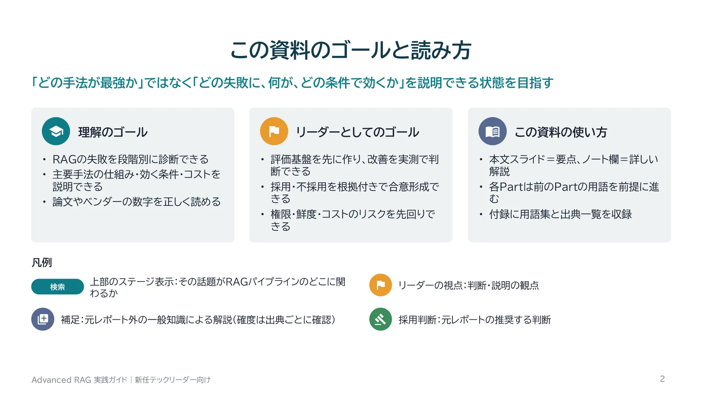
スライド 2 のテキストと解説
ゴールは用語を覚えることではなく、プロジェクトの技術判断を自分の言葉で説明できることです。各スライド上部の6つのステージ表示は、その話題がRAGパイプラインのどこに関係するかを示します。黄色の「リーダーの視点」は、技術リーダーとして判断・説明するときの観点です。紫の「補足」は元レポートにない一般知識で、出典の確度が元レポートと同じではない点に注意してください。
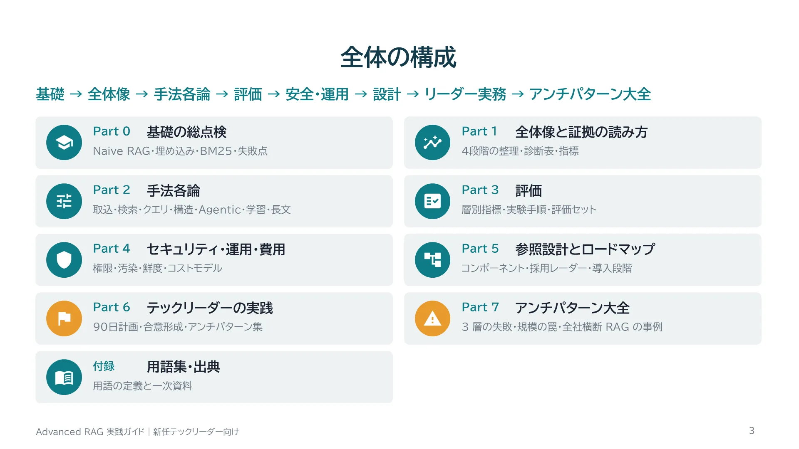
スライド 3 のテキストと解説
前半で共通言語（指標・失敗の分類）を固め、手法各論はパイプラインの上流から下流へ順に進みます。評価と安全・運用は「後で考えるもの」ではなく、手法選定より先に設計すべきものとして独立したPartにしています。最後にテックリーダーとしての実務（最初の90日、合意形成、アンチパターン）を補足します。
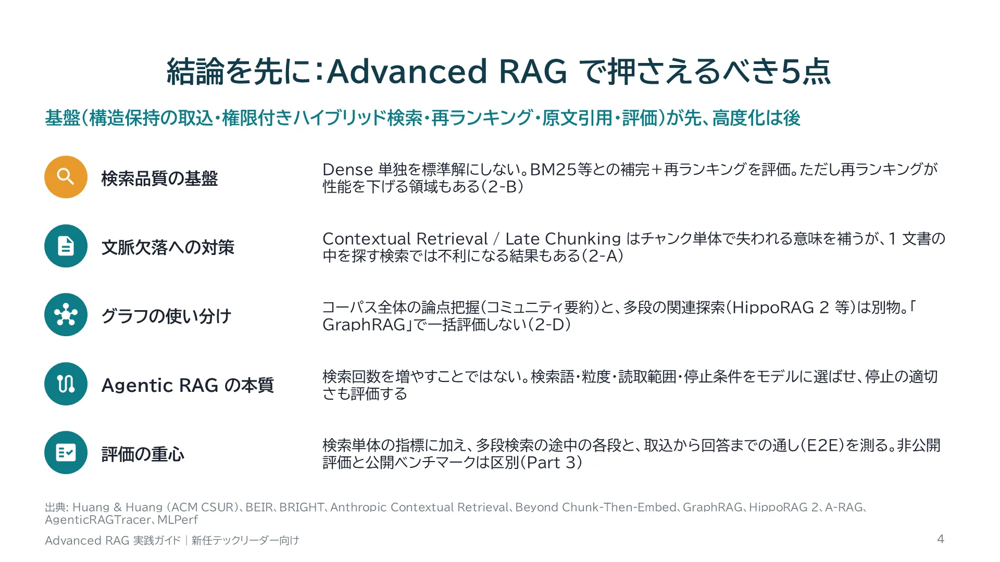
スライド 4 のテキストと解説
元レポートの結論です。1つ目、Dense検索だけを標準解にせず、BM25などの語彙検索と組み合わせ、再ランキングを評価する。ただし再ランキングが逆効果になる領域もある。2つ目、Contextual RetrievalやLate Chunkingはチャンク単体で失われる文脈を補うが万能ではない。3つ目、GraphRAGという名前で括られる手法は目的が全く異なる。4つ目、Agentic RAGの本質は検索回数ではなく、検索語・粒度・読取範囲・停止条件をモデルに選ばせること。5つ目、評価はエンドツーエンドかつ途中段階まで測る方向に進んでいる。
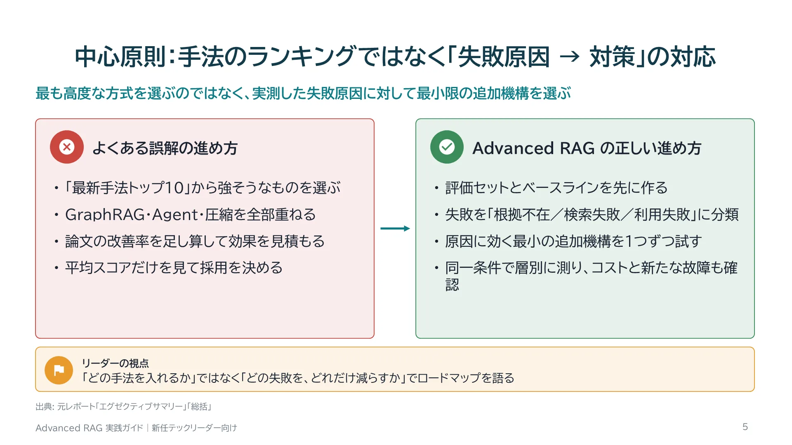
スライド 5 のテキストと解説
新任リーダーが最初に陥りがちなのは「最新でスコアの高い手法を入れれば精度が上がる」という発想です。しかし論文の数字は特定データ・特定モデル・特定指標での結果で、組み合わせ効果も加算できません。リーダーの仕事は、まず失敗を測って分類し、その原因に効く最小の手を打ち、効果を同じ条件で測ることです。この資料全体がこの原則に沿って構成されています。
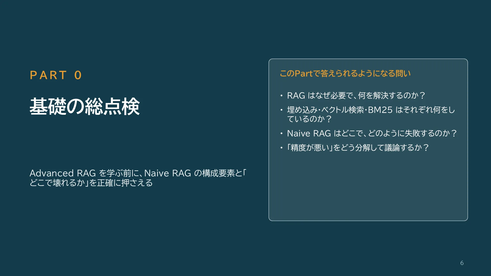
スライド 6 のテキストと解説
Part 0は新人向けの基礎固めです。既に知っている内容でも、用語の定義を揃えることが後半の議論の前提になります。
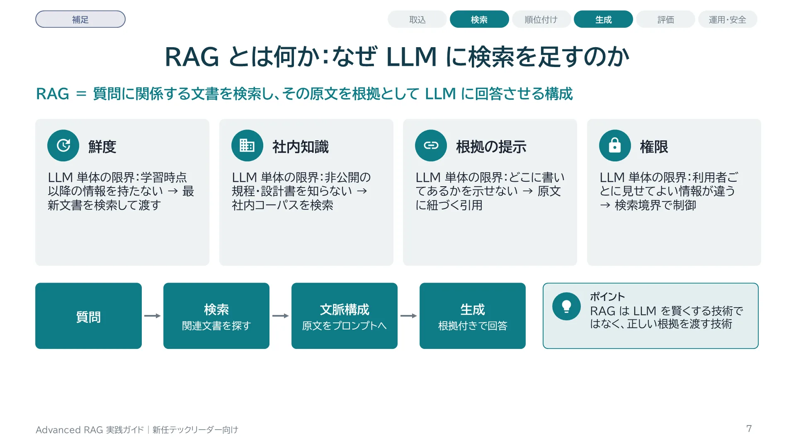
スライド 7 のテキストと解説
LLMは学習時点までの公開情報をパラメータに持ちますが、社内文書・最新情報は持たず、どの文書に基づくかも示せません。RAGは推論時に外部知識を検索して入力に加えることで、この4つの限界を補います。重要なのは、RAGが「LLMを賢くする」技術ではなく「LLMに正しい根拠を渡す」技術だという点です。根拠を渡せなければ、どんなに強いLLMでも正しく答えられません。
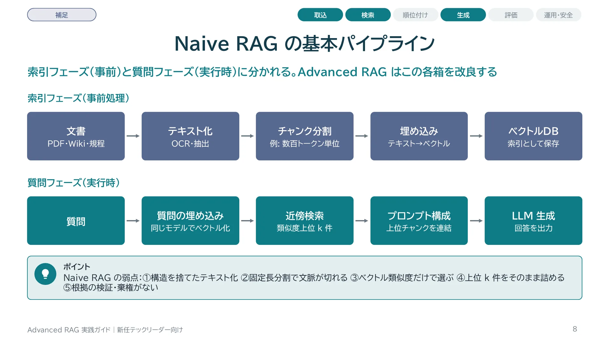
スライド 8 のテキストと解説
索引フェーズでは、文書をテキスト化し、一定長のチャンクに分割し、各チャンクを埋め込みベクトルに変換してベクトルDBに保存します。質問フェーズでは、質問も同じモデルでベクトル化し、近いチャンクを上位k件取り出してプロンプトに詰め、LLMに回答させます。Advanced RAGの各手法は、この図のどの箱を置き換える・追加するかで整理できます。例えば取込の改善は左上、再ランキングは右下の検索と生成の間に入ります。
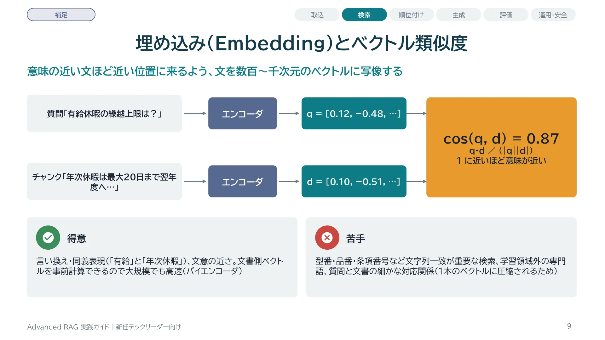
スライド 9 のテキストと解説
埋め込みモデルは文をベクトル（例えば768次元や1024次元）に変換します。学習によって、意味が近い文ほどベクトルの向きが近くなるように調整されています。類似度にはコサイン類似度がよく使われます。質問と文書を別々にエンコードする構成をバイエンコーダと呼び、文書側のベクトルを事前計算しておけるので大規模でも高速です。一方で、質問と文書の細かな相互作用は見られないため、後で出てくるクロスエンコーダによる再ランキングとの役割分担が生まれます。また、型番や固有名詞のような「意味」より「文字列一致」が重要な検索は苦手になりがちです。
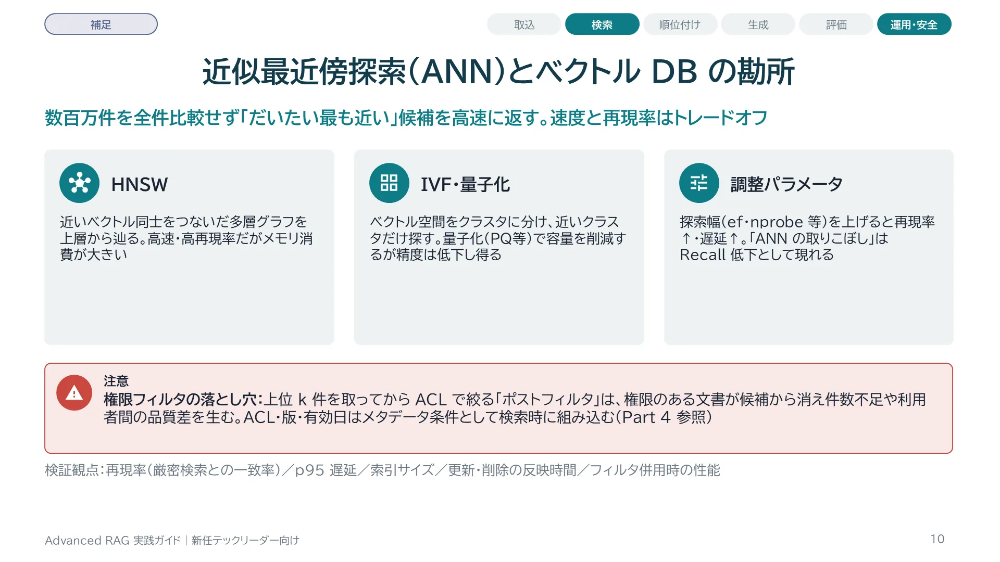
スライド 10 のテキストと解説
全チャンクと総当たりで類似度を計算するとコストが件数に比例するため、実運用ではHNSW（階層的なグラフ）やIVF（クラスタ分割）などの近似最近傍探索を使います。パラメータで速度と再現率のバランスを調整でき、真の最近傍を取りこぼすことがあります。リーダーとして特に注意すべきは権限フィルタとの組み合わせです。上位k件を取ってから権限で絞るポストフィルタでは、権限のある文書が候補に残らず件数不足になったり、検索性能が利用者によって大きく変わったりします。権限は検索条件として最初から組み込む設計を検討してください。
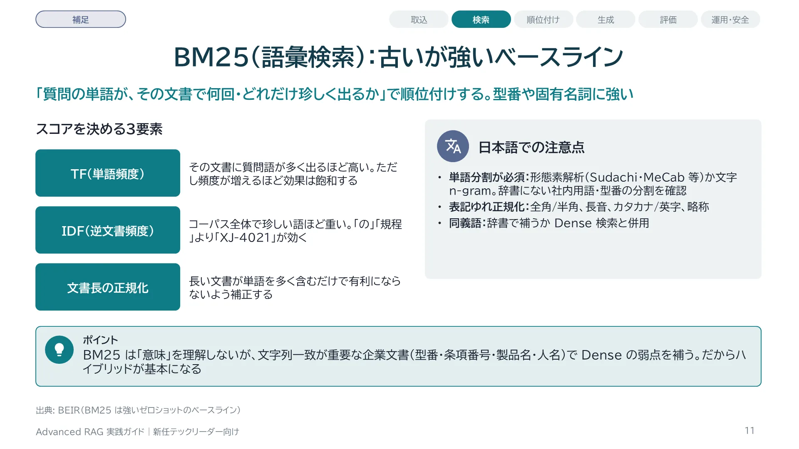
スライド 11 のテキストと解説
BM25は単語の出現頻度（TF）、単語の珍しさ（IDF）、文書の長さの補正の3要素でスコアを計算します。「の」「は」のようにどこにでも出る語の重みは小さく、「XJ-4021」のような珍しい語が一致すると大きく効きます。学習不要で領域を選ばず、BEIRでも強いゼロショットのベースラインとされています。日本語では単語の区切りがないため、形態素解析やn-gramでの分割が必須で、この前処理の品質が検索品質を直接左右します。表記ゆれ（全角半角、長音、旧字体、略称）の正規化も同様に重要です。
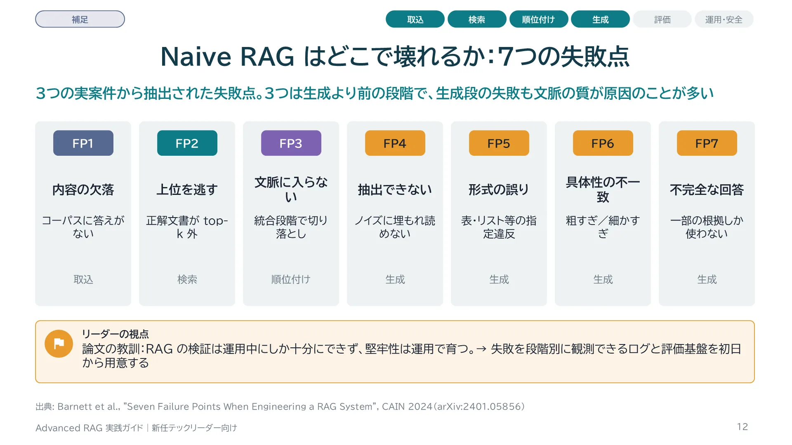
スライド 12 のテキストと解説
Barnettらは研究・教育・医療の3つのRAG事例から7つの失敗点を整理しました。1 必要な内容がそもそもコーパスにない、2 正解文書が上位k件に入らない、3 取得はしたが文脈に詰める段階で落ちる、4 文脈にあるのにLLMが抽出できない、5 出力形式が誤る、6 具体性が質問に合わない、7 回答が不完全。彼らはRAGの検証は運用中にしか十分にできず、堅牢性は最初から設計するより運用で育つと述べています。だからこそ、失敗を観測できる仕組みが重要です。
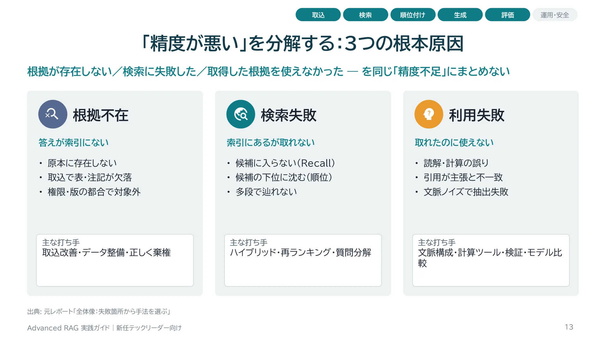
スライド 13 のテキストと解説
これは元レポートが「実装上の要点」と強調している点です。例えば回答の正答率が70%だったとき、残り30%の内訳が「そもそも答えが文書にない」「文書はあるが検索で取れていない」「取れているのにLLMが誤読した」のどれかで、打ち手は全く異なります。根拠不在なら取込・データ整備か棄権、検索失敗なら検索・ランキング、利用失敗なら文脈構成やモデルの問題です。Oracle Context（正解根拠を直接与える条件）で読解側の上限を測ると、検索側と生成側の責任を分離できます。
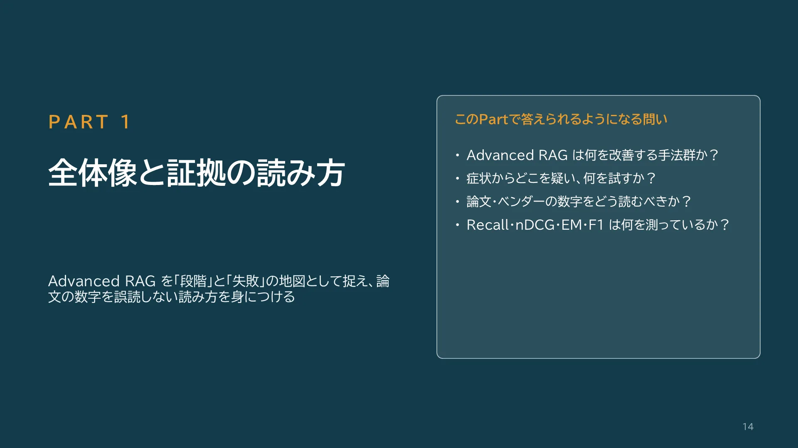
スライド 14 のテキストと解説
Part 1では、以降の手法各論を読むための地図と物差しを用意します。
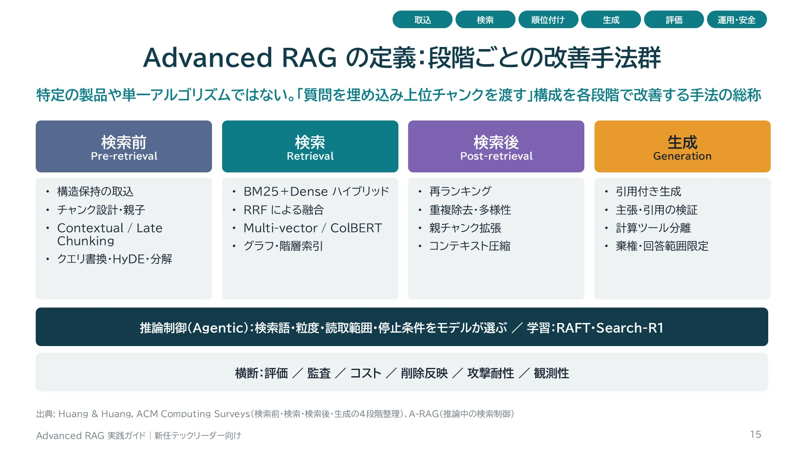
スライド 15 のテキストと解説
2026年刊行のサーベイはRAGを検索前・検索・検索後・生成の4段階で整理しています。元レポートはこれを実装上のボトルネックに対応させ、さらに推論制御（Agentic）、学習、評価・運用を加えています。どの段階の手法かを意識すると、「この手法は何の失敗を減らすのか」が明確になります。下段の横断領域は、どの段階の手法を選んでも必要になる共通基盤です。
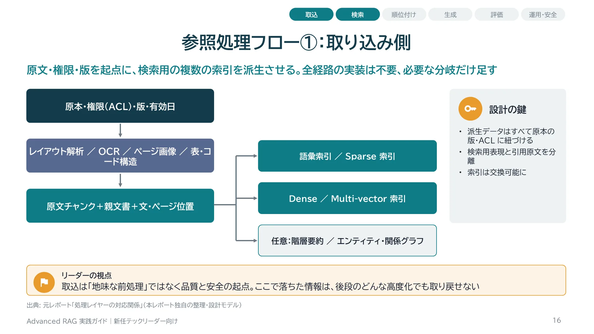
スライド 16 のテキストと解説
取り込み側の要点は2つです。1つ目は、原本・権限・版・有効日を最初に確定させること。後段で作るすべての派生データ（チャンク、埋め込み、要約、グラフ）がここに紐づくことで、削除や権限変更を正しく伝播できます。2つ目は、チャンクを原文の位置（文書ID・ページ・文字オフセット）と結びつけて保存すること。これにより、検索用の表現と引用する原文を分離できます。階層要約やグラフは「任意」であり、必要性が確認できてから追加します。
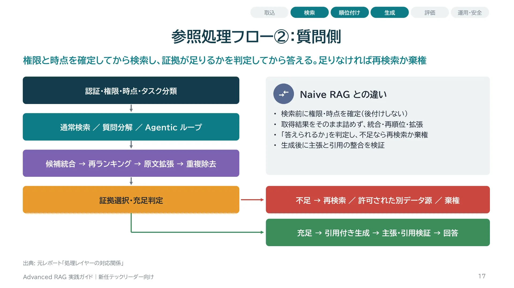
スライド 17 のテキストと解説
Naive RAGとの最大の違いは「証拠選択・充足判定」の箱があることです。取得したものをそのまま生成に回すのではなく、質問に答えるのに十分な証拠が揃っているかを判定し、不足なら再検索・許可された別データ源・棄権に分岐します。充足していても、引用付きで生成した後に主張と引用の整合を検証します。最初の「タスク分類」は、短い通常経路で済む質問と、質問分解やAgenticループが必要な質問を振り分けるルータです。
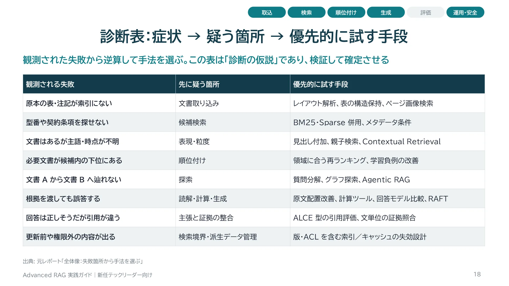
スライド 18 のテキストと解説
この表は、プロジェクトで最も頻繁に参照することになる表です。例えば「型番で検索しても見つからない」という報告があれば、まず候補検索段階を疑い、BM25やSparse検索の併用、メタデータ条件を試します。「文書はあるが主語や時点がわからない」のは、チャンク化で文脈が切れた典型例で、見出し付加や親子検索、Contextual Retrievalが候補になります。重要なのは、これが仮説であることです。失敗事例を集め、どの行に当たるかを分類し、件数の多い行から手を打ちます。
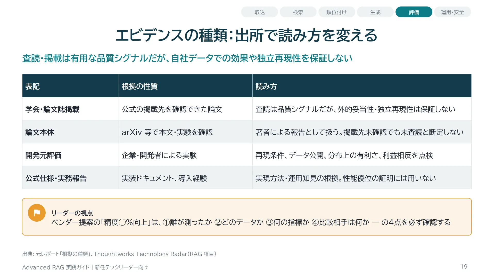
スライド 19 のテキストと解説
元レポートは情報源を4種類に分けています。学会・論文誌掲載の論文、arXiv等の論文本体、企業・開発者自身の評価、公式仕様や実務報告です。これは優劣の序列ではなく、読み方の違いです。開発元評価は自社製品に有利な条件になっていないか、データが公開されているかを点検します。Thoughtworks Radarのような実務報告は採用判断の表現形式として参考になりますが、統制実験の数値ではないため性能の根拠には使いません。リーダーがベンダーと話すときは、この表を頭に入れておくと冷静に判断できます。
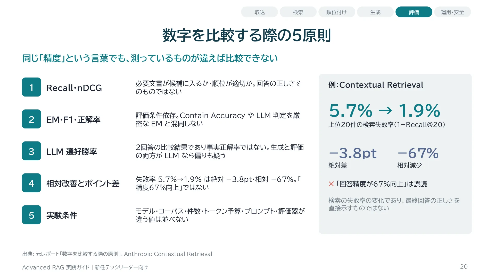
スライド 20 のテキストと解説
最も誤読されやすいのが相対改善と絶対差です。Contextual Retrievalでは上位20件の検索失敗率が5.7%から1.9%に下がりました。これは絶対差3.8ポイント、相対では約67%の削減ですが、「回答精度が67%向上」したわけではありません。そもそも測っているのは検索の失敗率であって回答の正しさではありません。また、LLM選好勝率は2つの回答を比較した好みの割合であって正解率ではない点、条件の違う数値を並べてランキングにしてはいけない点も重要です。
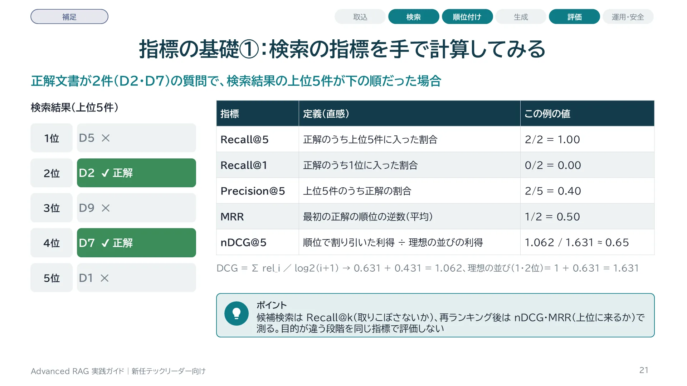
スライド 21 のテキストと解説
Recall@kは正解文書のうち上位k件に入った割合で、候補検索の網羅性を測ります。この例では上位5件に2件とも入っているのでRecall@5は1.0ですが、1位は不正解なのでRecall@1は0です。MRRは最初の正解が何位に出たかの逆数で、2位なので0.5です。nDCGは順位が下がるほど価値を割り引くDCGを、理想的な並び（正解が1位・2位）のDCGで割ったもので、0.65になります。つまり「候補には全部入っているが、順位はまだ改善の余地がある」ことが数字で分かります。候補検索の評価にはRecall、再ランキングの評価にはnDCGやMRRを使うのが基本です。
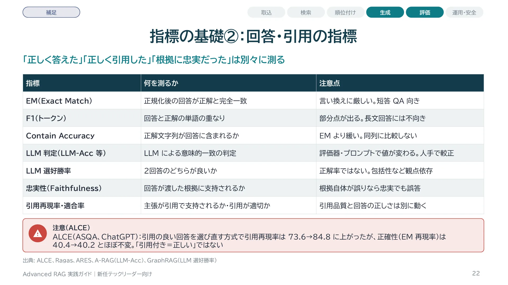
スライド 22 のテキストと解説
EM（完全一致）は正規化した回答文字列が正解と完全一致するかを見る厳しい指標で、F1は単語（トークン）の重なりで部分一致を評価します。Contain Accuracyは正解文字列が回答に含まれていればよいとする緩い指標で、LLM-AccはLLMに意味的一致を判定させる指標です。同じ「正解率」でもこれらは大きく値が変わります。忠実性（Faithfulness）は回答が渡した根拠に支えられているかで、正解かどうかとは別です。引用再現率・適合率は回答中の主張が引用で支持されているか、引用が適切かを測ります。
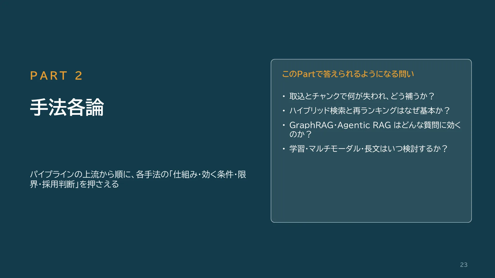
スライド 23 のテキストと解説
Part 2は8つの章からなります。2-A 取込・チャンク、2-B 検索・再ランキング、2-C クエリ変換、2-D 階層・グラフ、2-E Agentic、2-F 学習、2-G マルチモーダル、2-H 長文・圧縮です。各章の最後に元レポートの採用判断を置いています。
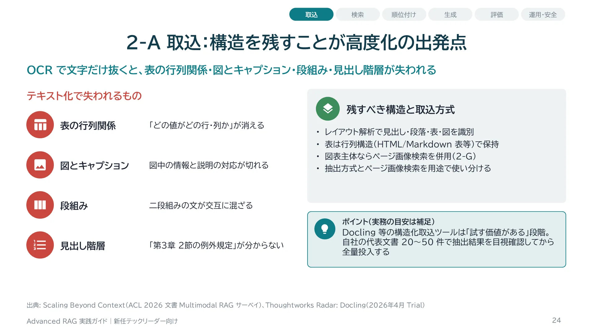
スライド 24 のテキストと解説
企業文書の多くはPDFやスライドで、表や図に重要情報があります。単純なテキスト抽出では、表のセルが一列に並んで「どの数字がどの行・列か」が分からなくなり、二段組みの文が交互に混ざり、見出しの階層が消えます。ACL 2026のサーベイは、OCRベース処理による構造情報の損失と、マルチモーダルモデルで直接扱う場合のコンテキスト処理の課題の両方を整理しています。Doclingは2026年4月にThoughtworks RadarでTrialになった文書変換ツールですが、比較可能な精度数値はないため、構造化取込を試す実務的根拠として扱います。
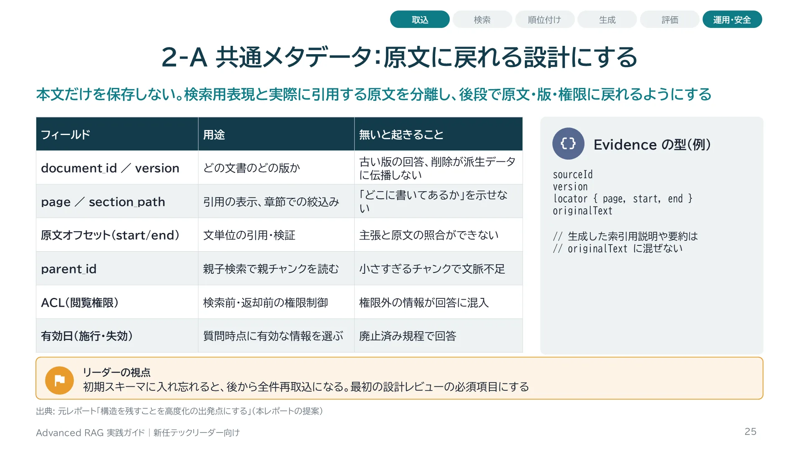
スライド 25 のテキストと解説
元レポートが提案する共通メタデータです。document_idとversionで「どの文書のどの版か」を、pageとsection_pathとオフセットで「その中のどこか」を特定できます。parent_idは親子検索で親チャンクを読むために使います。ACLと有効日は検索境界の制御に必須です。これらを最初のスキーマに入れておかないと、後から引用表示・削除反映・権限制御を実装する際に全件の再取込が必要になります。リーダーとしては、最初の設計レビューでこのスキーマを必ず確認してください。
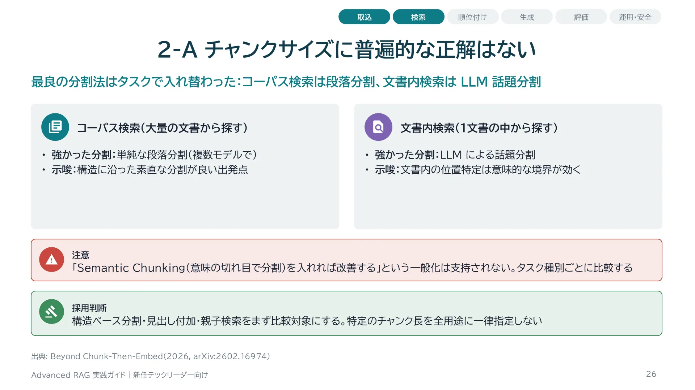
スライド 26 のテキストと解説
2026年のBeyond Chunk-Then-Embedは、6種の分割法と4種の埋め込みモデルで、文書内検索（ある文書の中から該当箇所を探す）とコーパス検索（大量の文書から探す）を比較しました。コーパス検索では単純な段落分割が複数のモデルで強く、文書内検索ではLLMによる話題分割が強いという結果でした。つまり「Semantic Chunkingを入れれば精度が上がる」という一般論は支持されません。自社のタスクがどちらに近いかを見極め、構造ベースの分割をまず試し、比較で判断します。
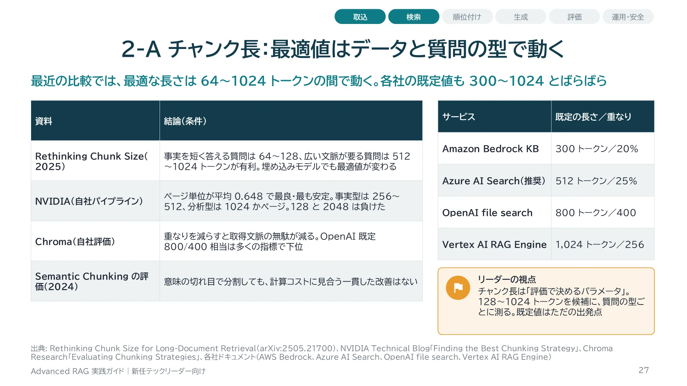
スライド 27 のテキストと解説
小さなチャンクは埋め込みが焦点を持つので検索精度が上がりやすい一方、それだけを渡すと前後の条件や主語が欠けます。大きなチャンクは文脈が豊富ですが、検索時に意味がぼやけます。親子検索はこのジレンマを、検索は小さな単位、読解は親の単位で行うことで解消します。A-RAGも文単位の検索と親チャンクの読取を別のツールとして分けています。注意点は、親を無条件に広げるとトークン量とノイズが増えることで、親の最大長や件数に上限を設けます。
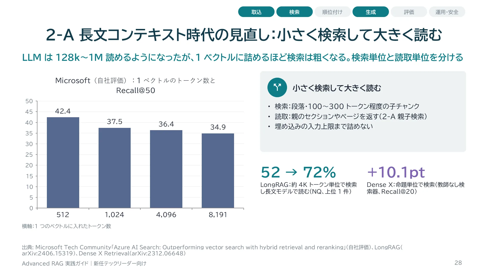
スライド 28 のテキストと解説
チャンク化で失われがちなのは「どの会社の」「いつの」「何についての」記述かという文脈です。例えば「前四半期比で売上が3%増加した」というチャンクだけでは、どの企業のどの期の話か分かりません。Contextual Retrievalは、文書全体とチャンクをLLMに渡して、そのチャンクの位置付けを説明する短い文を生成し、チャンクの前に付けてから埋め込みとBM25の両方に索引化します。注意点は、この説明文はLLMの生成物であり誤りを含み得ることです。原文とは別のフィールドに保存し、引用には原文だけを使います。
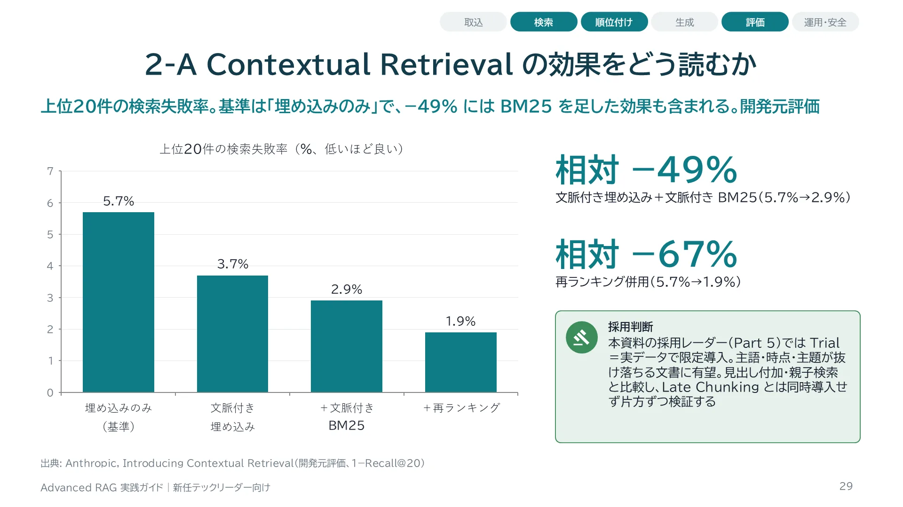
スライド 29 のテキストと解説
Anthropicの開発元評価では、通常方式の上位20件の検索失敗率5.7%が、Contextual EmbeddingsとContextual BM25の併用で2.9%、さらに再ランキングを加えると1.9%になりました。相対で49%と67%の低下です。ただしこれは検索の失敗率であり、最終回答の正解率が同じ割合で改善することを示したものではありません。また開発元による評価なので、元レポートの採用レーダーではTrial扱いです。自社データで、見出し付加などの安価な方法と比較して効果を確認するのが筋です。
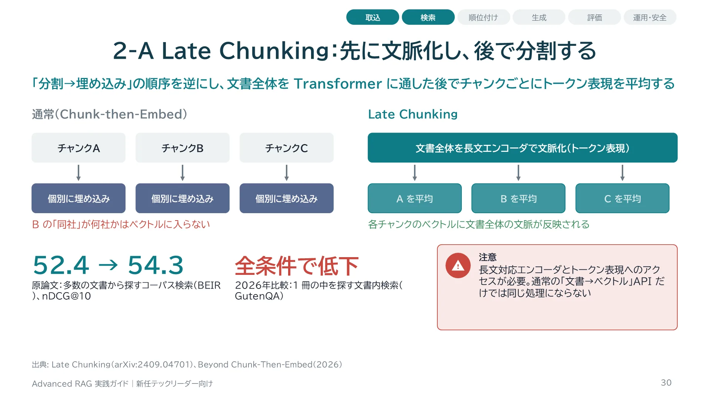
スライド 30 のテキストと解説
通常は文書を分割してから各チャンクを独立に埋め込むため、チャンク内の「同社」「この制度」が何を指すかは埋め込みに反映されません。Late Chunkingは文書全体（またはモデルの最大長まで）をTransformerに通して各トークンの文脈付き表現を得た後、チャンク境界ごとにトークン表現を平均プーリングします。Contextual Retrievalと違いLLM生成は不要ですが、長文対応エンコーダとトークン単位の出力へのアクセスが必要で、一般的な「文を渡すとベクトルが返る」APIでは実現できません。原論文はnDCG@10で52.4から54.3の改善を報告していますが、2026年の比較では文書内検索で全条件において低下しました。
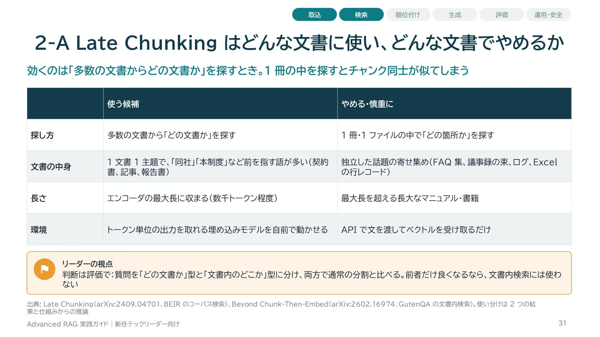
スライド 31 のテキストと解説
3手法は似た問題（チャンク単体では文脈が足りない）を扱いますが、介入点が違います。Contextual Retrievalは索引化するテキストそのものを変え、Late Chunkingは埋め込み計算と分割の順序を変え、親子検索は検索単位と生成に渡す単位を分けます。同時に導入すると、どれが効いたのか、どれが悪影響を出したのかが分かりません。アブレーション（1つずつ外して効果を測る実験）で改善の所在を確認するのが元レポートの提案です。
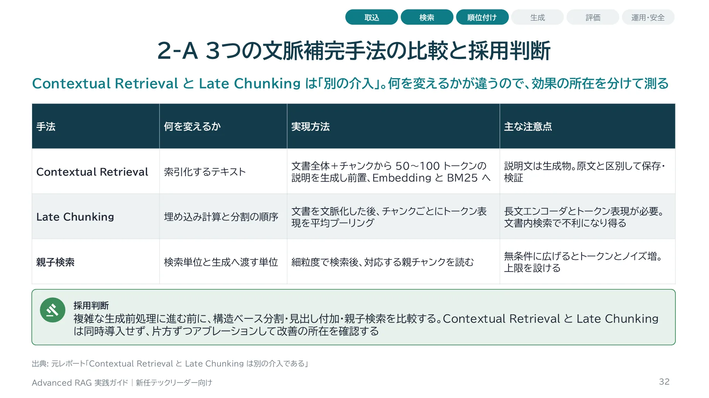
スライド 32 のテキストと解説
BEIRは18の異なる分野のデータセットで検索方式を比較したベンチマークで、BM25が学習なしでも強いこと、Denseモデルは学習分野から離れると性能差が大きく出ることを示しました。企業文書には型番、契約条項番号、製品名、社内略語のような文字列一致が重要なクエリと、「解約したい」のように文書側では「契約の終了」と書かれている言い換えクエリが混在します。どちらか一方に依存せず、BM25とDenseを並列に実行して統合するのが基本形です。
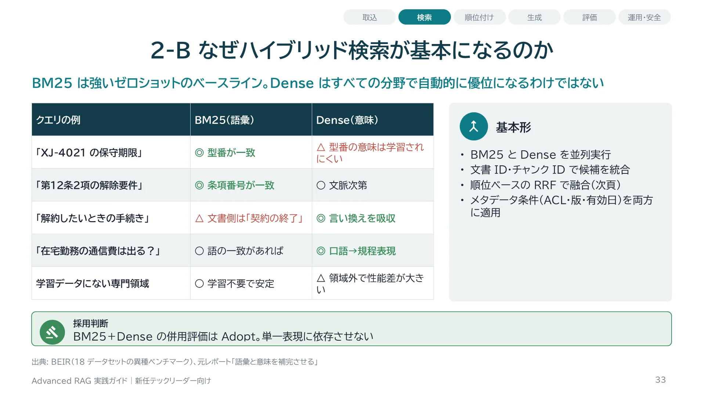
スライド 33 のテキストと解説
BM25のスコアは12.3のような値、Denseのコサイン類似度は0.82のような値で、尺度が全く違うため単純に足すとBM25が支配的になります。RRFはスコアを捨て、各検索器での順位rだけを使い、1/(c+r)を合計します。cは定数で、60がよく使われます。この例ではDで1位、BM25で2位のBが最上位になり、両方に出たAが続きます。片方にしか出ない文書は、出ていない検索器の項が0になります。元レポートは、c、候補件数、重みを検証パラメータとし、検索器に現れない文書の扱いを固定するよう述べています。
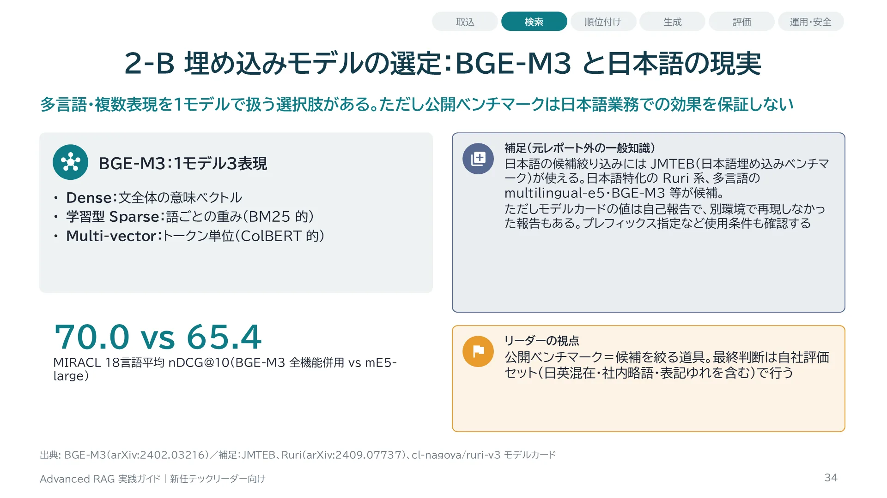
スライド 34 のテキストと解説
BGE-M3は1つのエンコーダからDense、学習型Sparse、トークン単位のMulti-vectorの3種類の表現を出力できるモデルで、MIRACLの18言語平均nDCG@10で全機能併用70.0、比較対象のmE5-largeが65.4と報告されています。ただしこれは日本語の企業内文書での効果を保証しません。補足として、日本語ではJMTEBという日本語埋め込みベンチマークがあり、日本語特化のRuriシリーズなどが公開されています。モデルカードの数値は著者の自己報告で、別環境で再現しなかったという報告もあります。公開ベンチマークは候補を絞る道具であり、最終判断は自社の評価セットで行います。
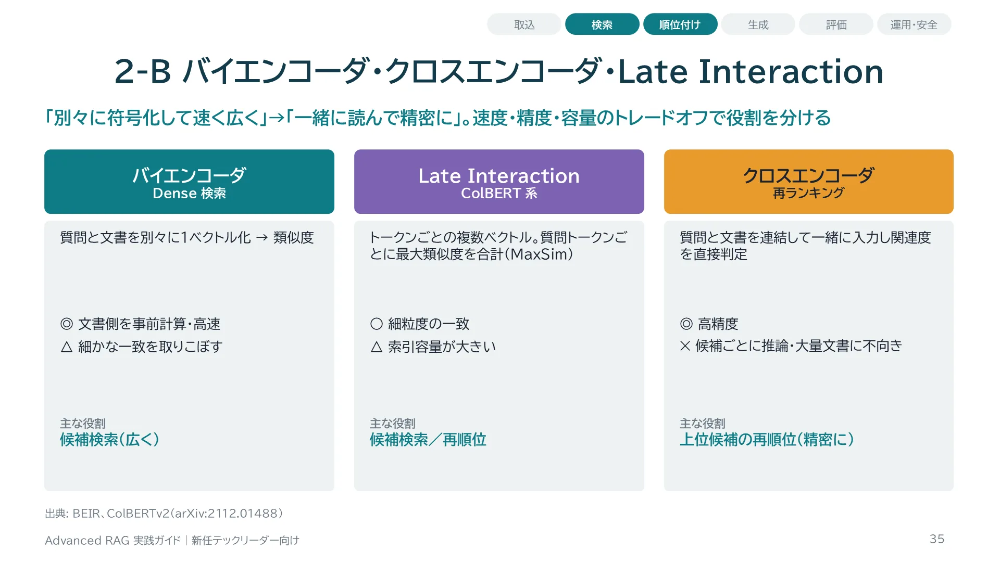
スライド 35 のテキストと解説
バイエンコーダ（通常のDense検索）は質問と文書を別々にベクトル化するので、文書側を事前計算でき高速ですが、1本のベクトルに圧縮されるため細かな一致を取りこぼします。クロスエンコーダは質問と文書を連結して一緒にモデルに入力し、関連度を直接判定するので精度が高い一方、質問ごとに候補すべてを計算し直すため大量の文書には使えません。そこで候補検索の後段で上位数十〜数百件にだけ使う、これが再ランキングです。ColBERTに代表されるLate Interactionはその中間で、質問と文書をトークンごとの複数ベクトルにし、質問トークンごとに最も似た文書トークンとの類似度を合計します（MaxSim）。細粒度の一致を扱えますが、索引容量が大きくなります。
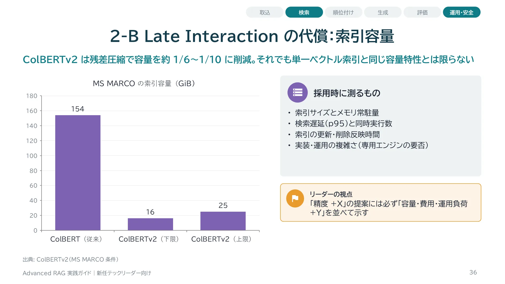
スライド 36 のテキストと解説
Late Interactionはトークン数だけベクトルを持つので、単一ベクトル方式より索引が大きくなります。ColBERTv2は残差圧縮と教師モデルによる学習改善を組み合わせ、MS MARCO条件で従来ColBERTの154GiBを16〜25GiBに削減しました。それでも、採用時には品質だけでなく、索引サイズ、メモリ、検索実装の複雑さ、更新時間を測る必要があります。リーダーは「精度が上がる」だけでなく「インフラ費用と運用負荷がいくら増えるか」をセットで提示できるようにしてください。
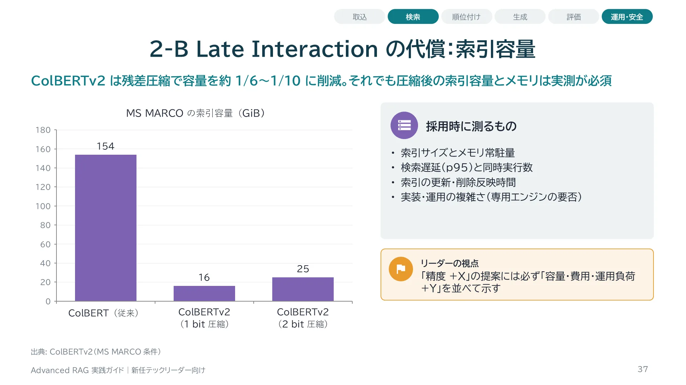
スライド 37 のテキストと解説
BEIRでは、BM25の候補をクロスエンコーダで再ランキングすると18データセット中16で改善しました。再ランキングが強力な部品であることは確かです。しかしBRIGHTという推論を要する検索ベンチマークでは、MS MARCOで学習した小型のMiniLM再ランキングが、BM25の平均nDCG@10を14.3から13.1に下げました。一方、GPT-4による再ランキングでは17.4に改善しています。学習した領域と評価する領域が合っているかが重要で、自社データでの回帰評価で逆効果を検出する仕組みが必要です。
スライド 38 のテキストと解説
検索段は2段構えで考えます。第1段の候補検索はBM25とDenseで広く集め、Recall@kで評価します。ここで正解文書が候補に入っていなければ、後段の再ランキングでは救えません。第2段の再ランキングは候補の中から精密に並べ替え、nDCGやMRRで評価します。その後、親チャンクへの拡張や重複除去を行い、トークン予算内で生成に渡します。各段の件数（候補何件、再ランキング後何件）は普遍値ではなく、評価で決めるパラメータです。
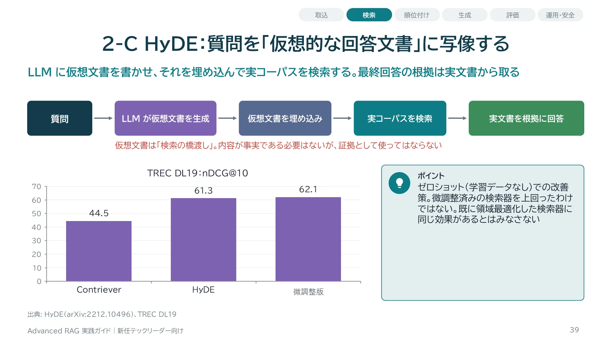
スライド 39 のテキストと解説
短い質問と、答えが書かれた長い文書とでは、表現の形が大きく違います。HyDEはLLMに「この質問に答える文書」を仮に書かせ、その仮想文書を埋め込みとして検索に使います。仮想文書の内容が事実として正しい必要はなく、関連文書の表現へ橋渡しする役割です。原論文のTREC DL19では、ゼロショットのContriever 44.5に対しHyDEは61.3でしたが、関連性ラベルで微調整したContrieverの62.1には届いていません。つまり、学習データがないゼロショット状況での改善策であり、既に領域最適化された検索器に同じ効果があるとは限りません。
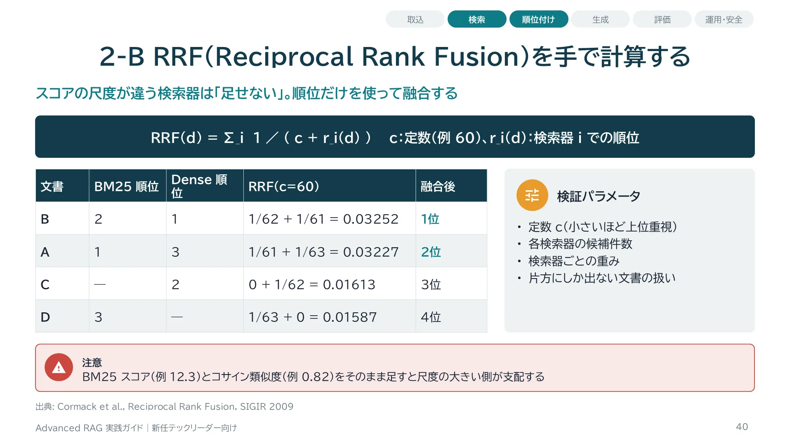
スライド 40 のテキストと解説
「主力製品Xの主要部品のサプライヤーが所在する国で、2026年に施行された輸出規制は何か」という質問を考えます。この答えが1つの文書にまとまっていることはまれで、まず部品とサプライヤーを特定し、その所在国を調べ、その国の規制を調べるという中間事実の連鎖が必要です。これが多段（マルチホップ）検索です。BRIGHTは推論が必要な検索課題で、LLMの推論ステップでクエリを拡張すると最大12.2ポイント改善したと報告しています。注意点は、サブ質問の答えを順に使うため、前のステップの誤りが後に伝播することです。
スライド 41 のテキストと解説
クエリ書換やHyDEでは、LLMが生成したテキストがシステム内を流れます。これを型として区別しておかないと、仮説として生成した文が「確認済みの事実」として証拠ストアに混入し、それを根拠に回答するという捏造の経路ができてしまいます。また書換の過程で、元の質問にあった年・対象・除外条件が落ちることがあるため、検索結果を元の質問に再照合します。観測ログには、どのクエリがどの候補を生み、どれが採用されたかを残し、生成による検索語改善と事実の捏造を切り分けられるようにします。
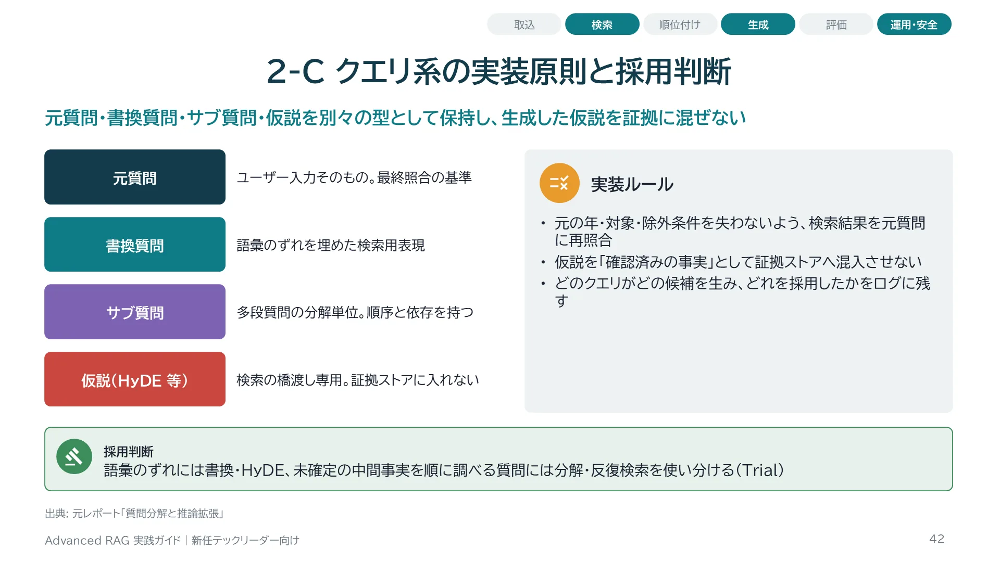
スライド 42 のテキストと解説
RAPTORは、チャンクを埋め込んで似たもの同士をクラスタにまとめ、各クラスタをLLMで要約し、その要約をさらにクラスタリングして要約する、という処理を繰り返して木構造を作ります。検索時は葉の原文だけでなく、上位の要約ノードも検索対象になるため、「この報告書全体の主張は何か」のような抽象的な質問にも答えやすくなります。同じGPT-3でQuALITYの正解率はBM25 57.3%、DPR 60.4%、RAPTOR 62.4%でした。なお、GPT-4利用時の82.6%と別モデルの既存手法の差（20.3ポイント）は、モデル差を含むため検索構造だけの効果としては引用できません。
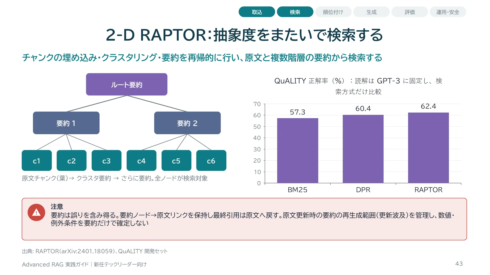
スライド 43 のテキストと解説
「GraphRAGを導入したい」という要望が来たら、まず「何を辿りたいのか」を聞いてください。Microsoft GraphRAGのGlobal Searchは、エンティティと関係を抽出してコミュニティに分け、コミュニティごとの要約からmap-reduceで全体回答を作る方式で、「コーパス全体でどんなテーマが議論されているか」のような全体把握に向きます。LightRAGは低レベル・高レベルのキーワードと近傍情報を組み合わせます。HippoRAG 2は三つ組とPersonalized PageRankで原文を順位付けし、複数文書にまたがる事実の探索に向きます。HopRAGはパッセージ同士をLLMが生成した疑似質問でつなぎ、論理的な関連を辿ります。
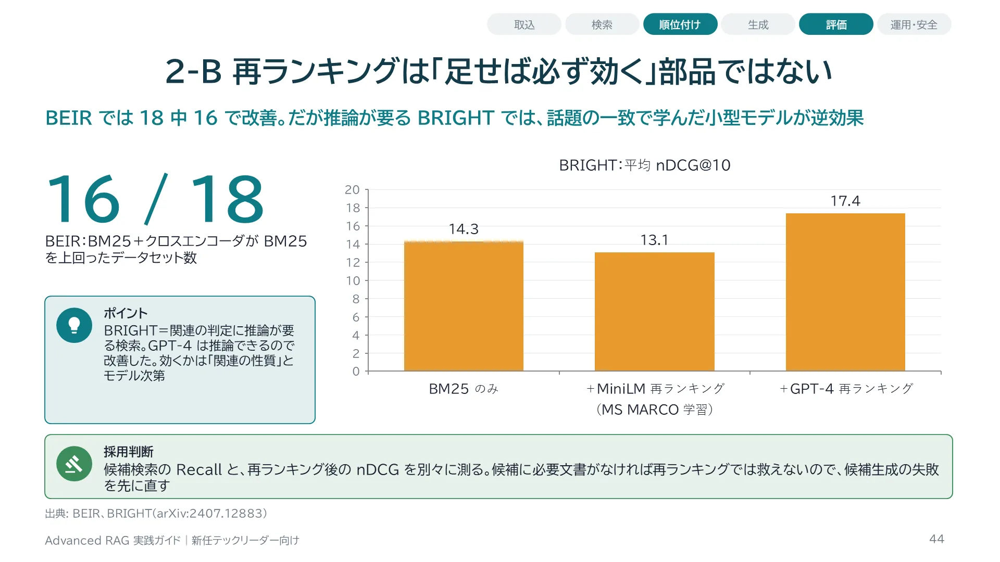
スライド 44 のテキストと解説
GraphRAGの索引作成では、LLMでテキストからエンティティと関係を抽出してグラフを作り、コミュニティ検出アルゴリズムでまとまりに分け、コミュニティごとに要約を作ります。これを階層的に行います。質問時には、各コミュニティ要約から部分回答を作り（map）、それらを統合して最終回答にします（reduce）。原論文では約100万・170万トークンの2コーパスのグローバルな質問で、通常の意味検索に対する包括性のLLM判定勝率が72〜79%でした。これは全体要約タスクでの回答比較であり、一般的な事実QAの正解率が72〜79%という意味ではありません。公式仕様も、どの階層のコミュニティを使うかで詳細さと時間・LLM資源が変わると説明しています。
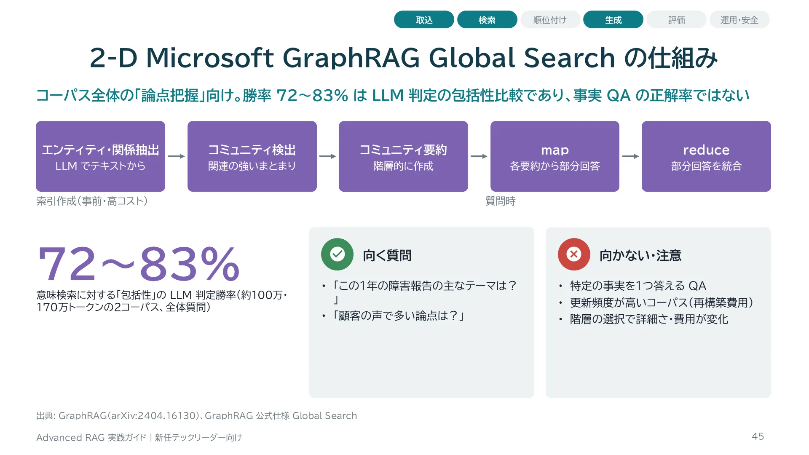
スライド 45 のテキストと解説
HippoRAG 2は、同じ回答モデルを使った7データセット平均のQA F1で、NV-Embed-v2による標準RAGの57.0に対し59.8でした。特に多段検索では2WikiのRecall@5が76.5から90.4に大きく改善しています。一方で、MuSiQue条件では索引時間が12.1分から99.5分、QA時間が0.3秒から1.2秒に増えています。全体平均の改善は数ポイントでも、多段質問という特定カテゴリでは大きく効く、という典型例です。カテゴリ別の評価と、費用・遅延の比較をセットで行う必要があります。
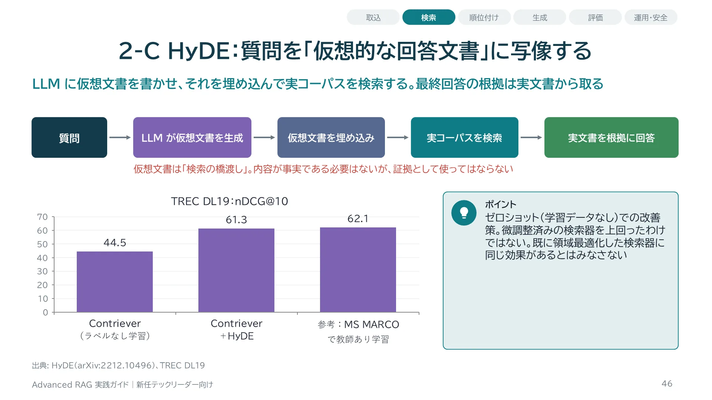
スライド 46 のテキストと解説
RAGSearchは、LLM・検索条件・推論プロトコルを共通化して、Dense RAGと複数のGraphRAG方式をAgentic検索の基盤として比較しました。Agentic化によってDense側の性能が上がり差が縮まる一方、複雑なマルチホップではグラフ側が有利な場面が残り、一般的なQAでは一貫した優位はないという結果です。ただし一部の比較は、データセットごとに複数のグラフ手法の最良値を取る形式で、単一構成の実運用性能とは異なります。LightRAGの好成績も、LLMが質問を作りLLMが評価する開放的な比較で、EMやF1と同じ尺度では並べられません。
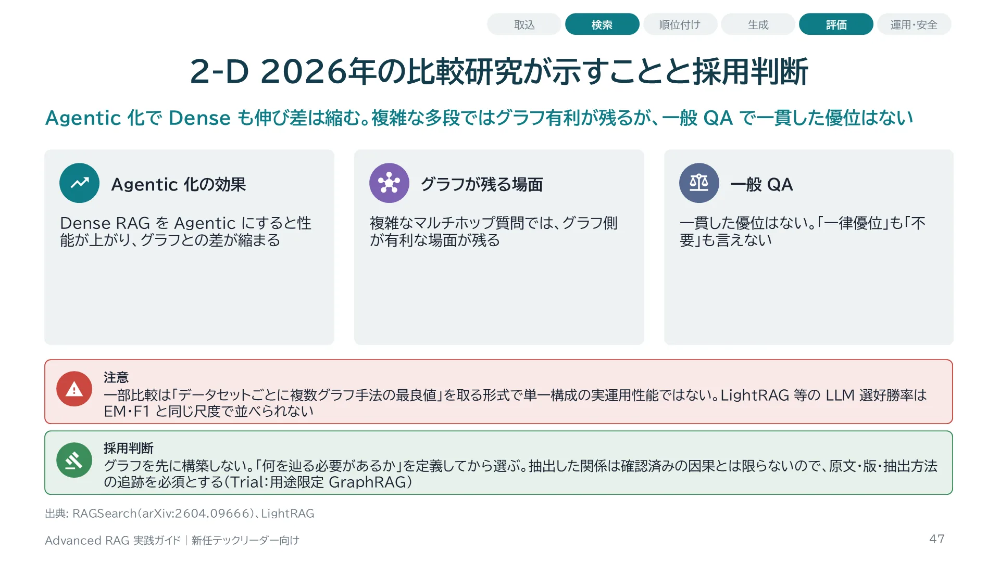
スライド 47 のテキストと解説
Self-RAGは、検索が必要か、取得文書が関連するか、生成文が支持されているかを特殊なreflection tokenとして出力するようモデルを学習する方式です。プロンプトで「自己反省して」と指示するループとは別物で、論文の効果には学習済みモデルの能力が含まれます。CRAGは検索評価器の信頼度に応じて、取得文書をそのまま使う、分解・選別する、外部検索するといった処理を切り替えます。A-RAGに代表されるAgentic RAGは、複数の検索ツールをモデルに公開し、何をどの粒度で検索し、何を読み、いつ止めるかをモデルが選びます。
スライド 48 のテキストと解説
CRAGの原論文は、検索結果の信頼度が低いときにWeb検索で補う設計です。しかし企業内用途でこれをそのまま採用すると、社員の質問文に含まれる顧客名や未公開情報が外部検索エンジンに送信されるリスクがあります。また社内規程と外部の一般情報が矛盾した場合、どちらを優先するかも決まっていません。元レポートは、外部検索の許可、質問からの機密漏洩、社内ルールと外部一般情報の優先順位を明示し、不許可の場合は社内の別データ源か棄権に分岐させることを提案しています。
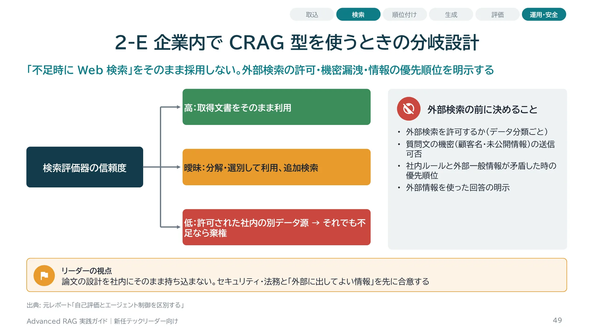
スライド 49 のテキストと解説
A-RAGは、キーワード検索、意味検索、チャンク読取という粒度の異なる操作をツールとしてモデルに公開します。モデルは文単位で検索して当たりをつけ、必要な親チャンクだけを読み、既読管理で同じ文書の再読を抑えます。毎ターン同じtop-k文書を大量に投入する単純なAgentic構成とは異なります。MuSiQueでのLLM-AccはNaive RAG 52.8、単純なAgentic構成66.2、Full構成74.1で、取得トークンは単純Agenticの56,360に対しFullは5,663でした。ただしこれは取得トークンの比較で、推論トークンや金額・遅延が同じ割合で減るわけではありません。またモデルの推論能力に依存する著者評価として読みます。
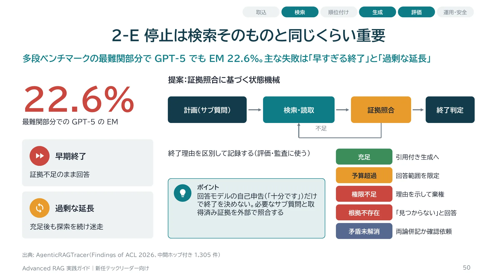
スライド 50 のテキストと解説
AgenticRAGTracerは中間ホップの正解を持つ1,305件のベンチマークで、最難関部分ではGPT-5でもEMが22.6%でした。診断の結果、推論の連鎖を早く終わらせすぎること、逆に必要以上に引き延ばすことが主な失敗要因でした。つまり、検索と思考ステップをどう配分し、いつ止めるかそのものが評価対象になります。元レポートは、回答モデルの自己申告だけで終了を決めず、必要なサブ質問と取得済みの証拠を照合する状態機械を提案しています。予算上限に達したことと、証拠が充足したことは別の終了理由として扱います。
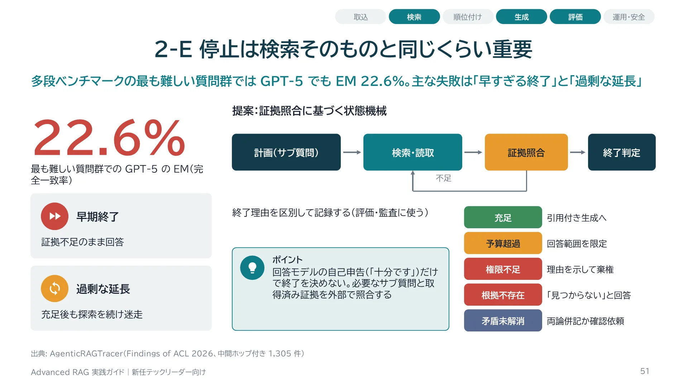
スライド 51 のテキストと解説
Agentic RAGを本番で運用するには、LLMに自由に検索させるだけでは不十分で、外側のオーケストレータが予算と状態を管理する必要があります。ステップ予算は最大ツール回数・経過時間・推論量で制限し、証拠の増分を記録して「新しい情報が増えていないのに検索を続けている」状態を検出します。検索状態には、どのクエリでどの対象をどのACL・時点で検索し、何を採用したかを保存し、監査と失敗分析に使います。並列化は独立したサブ質問だけに限り、前提に依存する検索は順序を守ります。
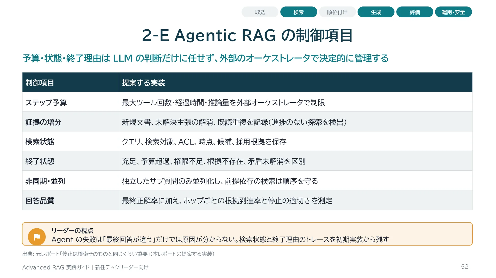
スライド 52 のテキストと解説
実際の問い合わせの多くは、1回の検索で答えられる単純な質問です。これらまでAgentic経路に流すと、遅延と費用が数倍になり、過剰探索による迷走リスクも増えます。元レポートは、タスク分類で通常経路とAgentic経路を振り分けることを提案し、全問への無制限な反復検索はHoldとしています。注意点は、ルータ自体も誤分類することです。複雑な質問を単純経路に回すと答えられず、単純な質問をAgenticに回すと無駄なコストがかかります。ルータの精度も評価し、複雑な方式の成功率だけでなく、全トラフィックでの費用対効果を測ります。
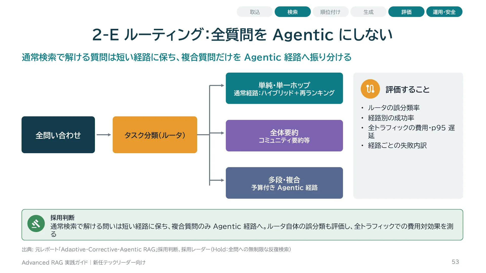
スライド 53 のテキストと解説
RAFTは、知識そのものをモデルのパラメータに覚えさせる通常の微調整とは異なり、「検索された文書をどう使うか」という振る舞いを学習させます。訓練例には正解を含む文書と、無関係な文書（ディストラクタ）を混ぜ、正解文書から該当箇所を引用して推論する回答を教師にします。これにより、根拠を渡しても誤答する（利用失敗）問題に効く可能性があります。ただし主な対象は同一ドメイン・同一資料群での利用で、別の専門領域や大幅に更新されたコーパスへの一般化は保証されません。
スライド 54 のテキストと解説
Search-R1は、モデルが推論し、必要に応じて検索クエリを発行し、結果を読んでまた推論し、最後に回答するという一連の軌跡を強化学習で最適化します。重要な工夫は、検索で得たトークンを学習損失からマスクし、モデル自身が生成した行動だけを最適化する点と、最終回答の正しさを報酬にする点です。論文条件では7Bモデルの7つのQAデータセット平均EMが、RAGベースライン0.304から0.431になりました。差は12.7ポイント、相対約41.8%です。ただし最新の商用モデルや企業内コーパスで同じ改善が出るとは解釈できません。
スライド 55 のテキストと解説
ColPaliは文書ページを画像のままVision Language Modelに入力し、ページ内の領域ごとの複数ベクトルを作ります。検索時はテキストクエリのトークンとページのベクトルをColBERTと同じLate Interactionで照合します。OCRテキストだけの索引では失われる図表や配置を検索対象に含められるのが利点です。ViDoReでの平均nDCG@5はColPali 81.3、ColQwen2の掲載構成86.6で、視覚検索モデルの中でも差があります。一方、float16表現で1ページ257.5KBと報告されており、100万ページなら単純計算で約258GBになります。ページ数が多い環境では容量が主要な検証項目です。
スライド 56 のテキストと解説
T²-RAGBenchは、テキストと表を含む23,088件の質問・文脈・回答の組で、正しい文脈を検索してから数値推論する設定を扱います。公式抄録はDenseとSparseを組み合わせたHybrid BM25が有効と報告していますが、詳細スコアは確認できないため効果量は記載していません。MLPerfの参照RAG構成では、数値と表に関する回答精度がいずれも31%と報告され、表の分割や数値の読み違い・計算が課題として挙げられています。これは当該参照構成の値であり、RAG全般の上限ではありません。監査可能な数値回答には、使った行・列・単位・期間・計算式を明示し、計算はLLMではなく決定的なツールに任せます。
スライド 57 のテキストと解説
Lost in the Middleは、関連情報が入力の最初や最後にあるときより、中央にあるときに性能が下がる傾向を示しました。ただし対象は当時のモデルで、同じ劣化が2026年のすべてのモデルに残るとは限らないため、採用候補のモデルで位置依存性を測ります。2025年の再評価では、外部文脈が必要な質問に絞ると全体としては長文コンテキストが優位でしたが、RAGだけが正答する質問もありました。結論はモデル・コーパス・検索単位・質問の性質に依存します。元レポートは、検索で文書を絞ってから長めに読む構成を比較対象にすることを提案しています。
スライド 58 のテキストと解説
LLMLingua-2は、教師モデルから得た圧縮例を使って、各トークンを残すか削るかを分類するモデルを学習します。MeetingBankとMistral-7Bの条件では、3,003トークンを970トークンに圧縮し、QAのEMが66.95から76.22に上がりました。ノイズが減ることで読解が改善する場合があることを示していますが、英語の会議録中心の結果で、法務や数値中心の専門文書にそのまま一般化はできません。圧縮で「しない」「を除く」「以上」などの否定・条件が落ちると、意味が逆転します。元レポートは高度な圧縮をAssessとし、まず重複除去や親チャンクの読取範囲制御などの安全な方法を試すよう勧めています。
スライド 59 のテキストと解説
この台帳は、ステークホルダーやベンダーとの議論で「その数字は何を測ったものか」を確認するための早見表です。例えばLate Chunkingの+1.9ポイントとHyDEの+16.8ポイントは、データセットも指標の意味も違うので比較できません。各行の「解釈・限界」列を必ずセットで引用してください。
スライド 60 のテキストと解説
後半の台帳です。GraphRAGの72〜79%はLLM選好勝率、A-RAGの74.1はLLM-Acc、Search-R1の0.431はEMと、指標の種類がすべて違います。HopRAGは強い比較相手との差が+1.17/+0.57ポイントと小さく、探索呼び出しのコストも確認が必要です。ALCEは、引用品質の改善が正確性の改善と同義ではないことを示す重要な例です。
スライド 61 のテキストと解説
Part 3はリーダーにとって最も重要なPartです。評価がなければ、どの改善も「効いた気がする」以上の主張ができません。
スライド 62 のテキストと解説
Ragasは、Faithfulness、Answer Relevance、Context Relevanceなどを参照回答なしで測る枠組みです。原論文のWikiEvalでは、人手の二者比較との一致率がFaithfulnessで0.95、Context Relevanceで0.70と、指標ごとに信頼性が異なりました。ARESは合成データで軽量な評価器を訓練し、少量の人手ラベルとPrediction-Powered Inferenceで推定値を較正する方式で、大きな領域移行時には評価器の性能が落ちることも論文で示されています。ALCEは、流暢さ・正しさ・引用品質を分けて評価し、引用品質を上げても正確性が上がらない場合があることを示しました。つまり、自動評価は少量の人手評価を大量に「増幅」する道具で、人手評価をなくすものではありません。
スライド 63 のテキストと解説
この表は評価ダッシュボードの設計図になります。各層で指標を持つことで、例えば最終正解率が下がったときに、候補検索のRecallが下がったのか、生成で誤ったのかを切り分けられます。特に見落とされやすいのが棄権と安全性です。棄権は「答えられない質問に無理に答えていないか」と「答えられるのに棄権していないか」の両面を見ます。運用指標では平均ではなくp95やp99を見て、長尾の遅延を見逃さないようにします。件数・閾値・許容コストは業務リスクで決め、普遍値はありません。
スライド 64 のテキストと解説
最初にOracle Context条件、つまり正解の根拠文書を直接LLMに与えた場合の正答率を測ります。これは検索が完璧だった場合の読解側の上限です。Oracleでも正答率が低いなら、問題は検索ではなく生成側（モデル、プロンプト、文書の質）にあります。次にDense、BM25、Hybrid、Hybrid＋Rerankerと1段ずつ追加し、必要に応じて高度化を足します。このとき回答モデルと評価器は固定し、モデルや推論努力量を変える実験は別の軸として行います。2つの軸を同時に動かすと、何が効いたのか分からなくなります。
スライド 65 のテキストと解説
元レポートは、評価セットを単一ホップ、多段、全体要約、図表、数値、否定・例外条件、古い情報、回答不能、権限不足、日英混在といったカテゴリに分けることを推奨しています。全体平均が上がっても、例えば「否定・例外条件」カテゴリだけ悪化していれば、業務上は重大な退行です。データ分割では、質問の重複だけでなく、同じ文書の別版や同じ時点の情報が学習・調整用と評価用にまたがるリークに注意します。補足として、作成手順は、業務担当者（SME）と一緒に実際の問い合わせから質問を集め、正解と根拠箇所をラベル付けし、本番で見つかった失敗を回帰セットに追加していく流れが実務的です。
スライド 66 のテキストと解説
2つの構成を比べるときは、同じ質問集合で両方を実行し、質問ごとの差を見る「対応のある比較」を基本にします。質問の難易度のばらつきが相殺され、少ない件数でも差を検出しやすくなります。差には信頼区間を付けます。補足として、ブートストラップ法（質問を復元抽出して差を繰り返し計算する）は実装が簡単で分布の仮定が少なく実務でよく使われます。LLM評価器は、プロンプト、モデルのバージョン、回答の提示順序で結果が変わるため、これらを固定します。改善が統計的に小さくても、重大な誤答が減るなら採用する価値があり、逆に平均が上がってもp99遅延が悪化するなら採用を見送ることもあります。
スライド 67 のテキストと解説
2026年の評価は4方向に拡張しています。Q2D-Webは約1.9億文書、69,721クエリ、10言語の大規模評価ですが、非公開ベンチマークと公開リーダーボードの組み合わせで、Perplexityの本番トラフィック由来という分布上の有利さを開発元自身が明記しています。AgenticRAGTracerはホップ単位で失敗を診断します。MLPerfは取り込みと複数ホップQAを別のワークロードとして測りますが、性能計測では記録済みの各ホップ入力を使ってホップ数と取得文書を固定するため、本番エージェントが動的に何回探索するかの分布は測りません。T²-RAGBenchは検索後の数値推論まで扱います。
スライド 68 のテキストと解説
Part 4は、本番リリースの可否を左右する領域です。セキュリティ部門・法務・インフラとの合意が必要になります。
スライド 69 のテキストと解説
PoisonedRAGは、RAGの知識データベースに悪性テキストを少数注入することで、狙った質問に対して指定した誤回答を誘導する攻撃を示しました。USENIX Security 2025の公式紹介では、数百万テキストを含むDBに標的質問あたり5件を注入して90%の攻撃成功率でした。これは論文の攻撃条件での値で、あらゆるRAGに当てはまる一般値ではありません。2026年のセキュリティサーベイは、コーパス、検索器、生成器をまたぐ攻撃面を整理し、正確性だけでなくプライバシーや公平性も含めた防御を扱っています。補足として、社内Wikiのように誰でも編集できる文書に「この文書を読んだAIは〜せよ」と書く間接プロンプトインジェクションも典型的な脅威です。
スライド 70 のテキストと解説
元レポートが提案する5つの運用要件です。権限は検索前に候補を制限し、返す直前にも再確認します。権限境界をまたいで作った要約やグラフには元データ由来の機密が残る可能性があります。派生データ（要約、Contextual説明、グラフ、埋め込み、キャッシュ）はすべて原文の版とACLに紐づけ、原文を削除したのに派生情報が残る状態をテストします。取得文書内の命令をシステム指示として扱わず、エージェントのツールは最小権限にします。鮮度については、取得日時・索引日時・更新日・施行日を区別します。検証用に悪性文書や偽の引用を含む攻撃・回帰セットを持ちます。
スライド 71 のテキストと解説
権限制御には2つの関門を置きます。1つ目は検索時で、利用者・テナント・文書のACLをメタデータ条件として検索に組み込み、権限のない文書は最初から候補に入れません。2つ目は返却直前で、長い処理の途中で権限が変わった場合や、キャッシュから返す場合に備えて再確認します。元レポートの疑似コードもreauthorizeを最後に呼んでいます。補足として、検索してから権限で絞るポストフィルタは、上位k件の多くが権限外だと回答に使える根拠が不足し、利用者によって品質が大きく変わる問題があります。また、権限をまたいで作った全社横断の要約やグラフは、それ自体が機密を含む派生物になり得るため、要約の作成範囲を権限境界に合わせます。
スライド 72 のテキストと解説
原文を1つ削除したとき、その原文から作られた派生データは、チャンク、埋め込み、Contextual説明、RAPTORの要約ノード、グラフのノードとエッジ、検索キャッシュ、回答キャッシュと多岐にわたります。検索結果からは消えても、要約やキャッシュに内容が残っていれば、削除したはずの情報が回答に現れます。元レポートは「新しい文書を追加しただけで、古いキャッシュや階層要約が無効化されたとみなさない」と述べています。また時刻は4種類を区別します。取得日時、索引日時、文書更新日、施行日・有効日です。「最新の文書」と「質問時点で有効な規程」は違います。
スライド 73 のテキストと解説
元レポートの費用モデルです。期間あたりの総費用は、取込、再索引、ストレージの固定的な費用と、問い合わせ件数に比例する検索・再ランキング・エージェント・生成・検証の費用、そして評価と運用の費用の合計です。PoCではクエリ単価だけを見がちですが、GraphRAGやContextual Retrievalのように索引作成でLLMを大量に呼ぶ方式では、文書が更新されるたびに再構築費用がかかります。AgenticやGraph方式を追加するときは、成功した少数ケースではなく、問い合わせ分布全体での費用と長尾遅延を確認します。
スライド 74 のテキストと解説
Part 5は元レポートの参照設計と採用レーダー、導入ロードマップです。プロジェクト計画の骨格として使えます。
スライド 75 のテキストと解説
9つのコンポーネントは、取込系（Source Registry、Document Processor、Index Builder）、問合せ系（Retrieval Gateway、Candidate Ranker、Evidence Store、Query Orchestrator、Answer & Verifier）、横断系（Evaluation & Trace）に分かれます。ポイントは、検索・読取を必ずRetrieval Gateway経由にすることです。ここで認証・時点制約・再認可を一元的に行えば、GraphRAGやAgentなど新しい検索方式を追加しても権限制御が漏れません。Evidence Storeは取得した証拠と主張の対応、未解決項目を管理し、Agentの停止判断や引用検証の基盤になります。チーム分担やマイクロサービス境界の検討にも使えます。
スライド 76 のテキストと解説
この疑似コードは元レポートの制御例を抜粋したものです。読みどころは4点です。1つ目、検索・読取はすべてgateway.authorizedSearchとauthorizedReadを通り、権限付きで実行されます。2つ目、ループはbudget.canContinueで外部から予算制御され、証拠の充足か進捗なしで抜けます。3つ目、根拠で支えられない場合はabstainWithReasonで理由付きの棄権をします。4つ目、生成後に主張と引用を検証し、最後に再認可してから返します。assessCoverageやverifyClaimsAndCitationsはLLMで実装されることが多いですが、その正しさを前提にせず、人手ラベルで評価・較正する必要があります。
スライド 77 のテキストと解説
1つ目、HyDEの仮想文書、要約、Contextual説明はすべて検索を助けるための表現であり、原文と同じ証拠として扱ってはいけません。2つ目、ACL、予算、外部アクセス許可、削除状態は、LLMに判断させるのではなく、コードで決定的に強制します。LLMは指示を守らないことがあるからです。3つ目、新しい文書を追加しても、古いキャッシュや階層要約は自動では無効化されません。4つ目、検証器が「正しい」と言っても保証ではありません。評価器と回答器が同じモデル系列だと同じ誤解を共有することがあるため、人手確認と反例で検出します。
スライド 78 のテキストと解説
Adoptは標準設計に組み込む価値が高いもの、Trialは実データで限定導入すべきもの、Assessは投資対効果を研究・検証すべきもの、Holdは標準方針として避けるものです。Adoptの5項目は、どのプロジェクトでも最初に整えるべき基盤です。Trialは、診断表で該当する失敗が多いと分かったときに限定的に試すものです。Assessの2項目は学習コストやリスクが大きく、研究的に検証する段階です。Holdは「全問への無制限な反復検索・グラフ化」で、手法自体の否定ではなく、目的化して全質問に適用することを避けるという意味です。
スライド 79 のテキストと解説
Adoptの5項目はすべて、高度な手法を入れる前の「計測と安全の土台」です。構造保持と原文追跡がなければ引用も削除伝播もできません。ハイブリッドと再ランキングの分離は、検索品質の大部分を安価に改善します。引用検証と分離評価がなければ、その後の改善を測れません。ACLを検索境界に組み込むことは、後付けが極めて困難です。この5つがPoCの段階から揃っているかを確認してください。
スライド 80 のテキストと解説
Trial以降の各項目には「効果を期待する条件」が付いています。この条件に当てはまる失敗が評価で確認できたときだけ導入を検討します。例えばRAPTORは長文の抽象的理解が必要な質問が多い場合、ColPali系は図表やスキャンPDFが主対象の場合です。Assessは学習・更新費用やリスクが大きく、検証的な取り組みに留めます。
スライド 81 のテキストと解説
元レポートのロードマップは時間軸ではなく、ゲート条件で区切られています。最初の基準づくりでは、評価セット、Oracle Context、DenseとBM25の比較を行い、原本不存在・検索失敗・読解失敗を分離できる状態を作ります。これがすべての土台です。次の検索改善でハイブリッドや再ランキングを入れ、同一条件で重要カテゴリとコストの改善を確認します。文脈改善、用途別分岐、学習投資、本番最適化と進みますが、各段階に進む根拠がなければ省略して構いません。プロジェクト計画やステアリングコミッティへの報告は、このゲート条件の達成状況で語ると明確になります。
スライド 82 のテキストと解説
用途別の出発点です。社内規程やFAQは、権限と時点が最重要なので、権限・時点付きのハイブリッド検索と再ランキングから始めます。技術文書は章節の階層が深く、親子検索が効きやすい領域です。調査報告の横断的な要約にはコミュニティ要約、多段の事実QAには質問分解と限定的なAgent、図表主体のPDFには画像とテキストの併用が出発点になります。これは仮説であり、評価で確認してから本番採用します。
スライド 83 のテキストと解説
Part 6は元レポートの原則をプロジェクト運営に落とし込んだ補足です。数値や期間は目安であり、組織の状況に合わせて調整してください。
スライド 84 のテキストと解説
Advanced RAGプロジェクトのテックリーダーは、自分で最良の手法を実装する人ではなく、チームが正しい判断を速く行える状態を作る人です。技術判断では、診断表と採用レーダーを使い、失敗原因に基づいて手法を選びます。評価基盤では、評価セット・層別指標・実験手順を整え、すべての判断をそこに通します。リスク管理では、権限・汚染・鮮度・コストを先回りして設計に入れます。合意形成では、ステークホルダーの期待値を管理し、採否を根拠付きで説明します。育成では、チームが論文やベンダーの数字を正しく読めるようにします。
スライド 85 のテキストと解説
これは元レポートのロードマップの最初の2〜3段階を、90日の目安に落とした補足です。最初の30日は現状把握に充て、代表的な文書の取込品質を目視で確認し、業務担当者と評価セットの初版を作り、Oracle ContextとDense・BM25のベースラインを測ります。この時点で失敗の内訳（根拠不在・検索失敗・利用失敗）が分かれば、残りの計画が立てられます。31〜60日でハイブリッド・再ランキング・メタデータ・親子検索を入れ、失敗分析を回します。61〜90日で、内訳から必要と判断された用途別の高度化を1つか2つ限定的に試し、本番に向けて権限・削除反映・監視を整えます。
スライド 86 のテキストと解説
技術判断を属人的な好みにしないための型です。まず失敗事例から仮説を立てます（例：型番クエリの失敗が多いのは語彙一致がないから）。次に、その仮説に効く最小の変更を1つだけ入れます（BM25の追加）。同じ評価セット・同じモデル・同じ評価器で層別に測り、対象カテゴリの改善と、他カテゴリの劣化、費用・遅延の変化を確認します。採用・不採用のどちらでも、理由と数字をADRに記録します。不採用の記録は特に重要で、半年後に同じ提案が出たときに議論を繰り返さずに済みます。
スライド 87 のテキストと解説
経営層や業務部門からは必ず「精度は何%ですか」「90%を目指してください」と聞かれます。単一の正解率で約束すると、評価セットの作り方次第で数字が変わること、重大な誤答と軽微な誤答が同じ1件として扱われることが見えなくなります。おすすめは、カテゴリ別の正答率、根拠不在時に正しく「分からない」と答える率（棄権の適切さ）、権限外露出ゼロのような安全性の条件をセットで提示することです。そして「誤答で業務上何が起きるか」を業務部門と一緒に定義し、重大誤答の件数を主要指標にします。
スライド 88 のテキストと解説
典型的な役割分担の例です。小規模チームでは1人が複数の役割を兼ねますが、責任の所在は明確にします。特に業務担当者（SME）は見落とされがちですが、評価セットの正解と根拠のラベル付け、重大誤答の定義に不可欠です。早い段階で業務部門と工数の合意をとってください。セキュリティ・法務とは、ACL設計、外部検索の可否、ログの保存期間について、PoCの段階から合意しておくと後戻りが減ります。
スライド 89 のテキストと解説
チームメンバーやベンダーが「この手法で精度が◯%上がる」と提案してきたときに、この10問で確認してください。特に重要なのは、何の指標か（検索か回答か、EMかLLM判定か）、比較相手が強いベースラインか（BM25＋再ランキングと比べているか）、同一条件か（回答モデルが同じか）、費用と遅延はどうか、の4点です。これに答えられない数字は、採用判断の根拠にしないのが安全です。
スライド 90 のテキストと解説
6つのアンチパターンです。いきなりGraphRAGやAgentから始めると、基盤がないまま複雑さだけが増え、効いたかどうかも測れません。評価なしのチューニングは、チャンクサイズやプロンプトをいじり続けて改善したかどうか分からない状態に陥ります。全質問をAgenticにすると費用と遅延が膨らみます。生成物を証拠に混ぜると捏造の経路ができます。ACLを後付けすると全件の再取込と再設計が必要になります。平均値だけを見ると、重要カテゴリの劣化や長尾遅延を見逃します。
スライド 91 のテキストと解説
元レポートが挙げる4つの限界です。日本語の専門業務については、英語中心のベンチマークでは省略表現、社内語彙、表記ゆれ、法令の時点差に対する効果量は確定できません。方式の合成効果は、個別論文の改善率を足し算しても推定できません。過去モデルで有効だった前処理や自己評価が新モデルでも効くとは限らず、モデル更新のたびに再評価が必要です。安全性については、引用を付ける、自己評価を足す、グラフ化するだけで正確性や安全性が保証される根拠はありません。リーダーはこれらを「リスク」としてプロジェクト計画に明記し、検証タスクを割り当ててください。
スライド 92 のテキストと解説
元レポートの総括です。Advanced RAGの技術的な進展は、検索器の強化だけでなく、検索対象の表現、読取粒度、探索順序、停止判断、評価範囲を拡張する方向にあります。一方で最新の比較研究は、高度な分割・グラフ化・反復検索がすべての質問で有利になるわけではないことも示しています。採用の中心原則は、実測した失敗原因に対して最小限の追加機構を選ぶことです。検索・読解・引用・権限・鮮度を分離して測り、改善と引き換えのコストや新たな故障モードまで確認できる設計を目指してください。
スライド 93 のテキストと解説
本資料で使った主要用語の定義です。略語はチーム内で意味を揃えておくと議論が速くなります。
スライド 94 のテキストと解説
用語集の続きです。
スライド 95 のテキストと解説
元レポートが参照した一次資料のうち、本資料で言及した主なものです。URLは元レポートを参照してください。
スライド 96 のテキストと解説
出典の続きと、本資料で補足として追加した資料です。